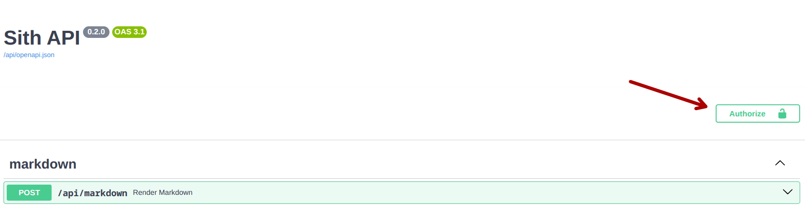
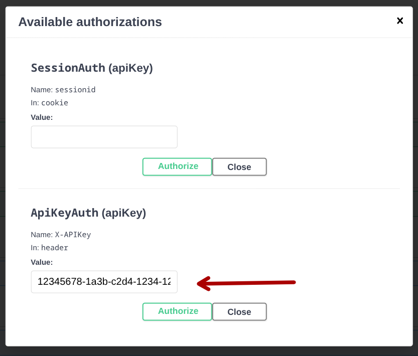

Connexion à l'API
La connexion à l'API du site AE peut se faire par deux moyens :
- par le cookie de session du site ; si vous accédez à l'API depuis le sith en étant connecté, cette méthode fonctionne par défaut
- par clef d'API ; si vous accédez à l'API depuis une application externe, vous devez passer par cette méthode.
Comme la méthode par cookie de session ne devrait pas être utilisée en dehors du cadre interne au site et qu'elle marche par défaut dans le cadre de ce dernier, nous ne décrirons pas outre mesure la manière de l'utiliser.
Obtenir une clef d'API¶
Il n'y a, à l'heure actuelle, pas d'interface accessible sur le site pour obtenir une clef d'API. Si vous désirez en obtenir une, demandez directement au respo info.
Danger
Votre clef d'API doit rester secrète. Ne la transmettez à personne, ne l'inscrivez pas en dur dans votre code.
Si votre clef a fuité, ou que vous soupçonnez qu'elle ait pu fuiter, informez-en immédiatement l'équipe informatique !
L'interface Swagger¶
Avant de commencer à utiliser l'API du site, vous pouvez explorer les différentes routes qu'elle met à disposition, avec les schémas de données attendus en requête et en réponse.
Pour cela, vous pouvez vous rendre sur https://ae.utbm.fr/api/docs.
Toutes les routes, à de rares exceptions près, y sont recensées. Vous pouvez les utiliser dans les limites de ce à quoi vos permissions vous donnent droit et de la méthode d'authentification.
Vous pouvez vous connecter directement sur l'interface Swagger, en cliquant sur ce bouton, en haut à droite :

Bouton d'autorisation sur Swagger
Puis rentrez votre clef d'API dans le champ prévu à cet effet, et cliquez sur authorize :

Saisie de la clef d'API
Les routes accessibles avec une clef d'API seront alors marquées par une icône de cadenas fermé, sur la droite.
Authentification et permissions
L'icône de cadenas signifie que la route accepte l'authentification basée sur les clefs d'API, mais pas forcément que vous avez les permissions nécessaires.
Si une route vous renvoie une erreur 403, référez-en à l'équipe info, pour qu'elle puisse vous donner les permissions nécessaires.
Utiliser la clef d'API¶
X-APIKey¶
Maintenant que vous avez la clef d'API, il faut l'utiliser pour authentifier votre application lorsqu'elle effectue des requêtes au site.
Pour cela, vous devez le fournir dans vos requêtes
à travers le header X-APIKey.
Par exemple :
Comme votre clef d'API doit rester absolument secrète,
vous ne devez en aucun cas la mettre dans votre code.
À la place, vous pouvez créer un fichier (par exemple, un .env)
qui contiendra votre clef et qui sera gitignoré.
Vous fournirez alors la clef d'API en la chargeant depuis votre environnement. Notez que c'est une bonne pratique à double-titre, puisque vous pouvez ainsi aisément changer votre clef d'API.
Connexion persistante¶
La plupart des librairies permettant d'effectuer des requêtes HTTP incluent une prise en charge des sessions persistantes. Nous vous recommandons fortement d'utiliser ces fonctionnalités, puisqu'elles permettent de rendre votre code plus simple (vous n'aurez à renseigner votre clef d'API qu'une seule fois) et plus efficace (réutiliser la même connexion plutôt que d'en créer une nouvelle à chaque requête peut résulter en un gain de performance significatif ; cf. HTTP persistant connection (wikipedia))
Voici quelques exemples :
Dépendances :
requests(>=2.32)environs(>=14.1)
Dépendances :
aiohttp(>=3.11)environs(>=14.1)
import aiohttp
import asyncio
from environs import Env
env = Env()
env.read_env()
async def main():
async with aiohttp.ClientSession(
base_url="https://ae.utbm.fr/api/",
headers={"X-APIKey": env.str("API_KEY")}
) as session:
async with session.get("club/1") as res:
print(await res.json())
asyncio.run(main())
Dépendances :
axios(>=1.9)dotenv(>=16.5)
Dépendances :
reqwest(>= 0.12, featuresjsonetgzip)tokio(>= 1.44, featurederive)dotenvy(>= 0.15)
use reqwest::Client;
use reqwest::header::{HeaderMap, HeaderValue};
use dotenvy::EnvLoader;
#[tokio::main]
async fn main() -> Result<(), Box<dyn std::error::Error>> {
let env = EnvLoader::new().load()?;
let mut headers = HeaderMap::new();
let mut api_key = HeaderValue::from_str(env.var("API_KEY")?.as_str());
api_key.set_sensitive(true);
headers.insert("X-APIKey", api_key);
let client = Client::builder()
.default_headers(headers)
.gzip(true)
.build()?;
let resp = client
.get("https://ae.utbm.fr/api/club/1")
.send()
.await?
.json()
.await?;
println!("{resp:#?}");
Ok(())
}